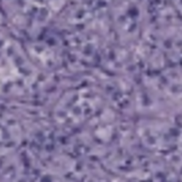

Saved example ·
Renal cell carcinoma
HistAgent generated this ranking and answer during a public Workbench API run on the default 10x Visium spot in the human clear-cell renal cell carcinoma example.
GSM5924036 · Spot ATATCTTAGGGCCTTC-1
Tissue views

Ranked genes
Predicted from the two H&E views, highest rank first.
- IGKC
- IGHG1
- IGHG2
- FTL
- IGHG3
- UBC
- IGKV4-1
- CD74
- FTH1
- IGHG4
- IGHA1
- IGHJ6
- IGLC1
- IGLV3-1
- HLA-DRA
- PABPC1
- XBP1
- JCHAIN
- S100A6
- HLA-C
- IFITM3
- PSAP
- VIM
- CTSD
- HLA-DPB1
- IGFBP7
- ITM2B
- MT2A
- OAZ1
- SSR4
- TIMP1
- APOE
- CD63
- COL1A2
- CST3
- CTSB
- DCN
- EEF1G
- EEF2
- HLA-DPA1
- HLA-E
- IGHM
- PFN1
- PPDPF
- SERF2
- SPARC
- SQSTM1
- TXNIP
- C1QB
- C3
Question from this run
Name three top-ranked genes in this evidence card and explain the limitations of interpreting this ranking.
The three top-ranked genes in this evidence card are IGKC, IGHG1, and IGHG2. Additionally, the evidence pool does not provide information on the specific cell types driving these gene expressions, limiting the ability to distinguish between cell-type-specific activity and general tissue-level expression.